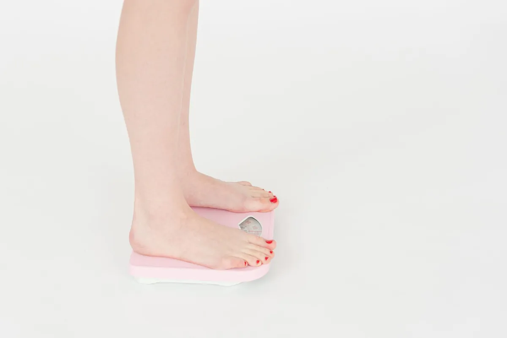

Struggling to Keep Weight Off? Why Your Brain Fights Back When You Lose Weight

Key takeaways
- I remember standing in front of the mirror after losing 15 pounds.
- I felt great, but also… weirdly hungry.
- Track what feels sustainable and adjust gradually.
I remember standing in front of the mirror after losing 15 pounds. I felt great, but also… weirdly hungry. All the time. And the cravings? Intense. It felt like my body was staging a rebellion. Sound familiar? It’s a frustrating reality for so many of us: the scale goes down, but then it seems to have a magnetic pull back up. This isn't just you being weak-willed. There's a powerful biological reason why your brain fights back when you lose weight, and understanding it is the first step to winning the long game.
For years, I thought weight loss was simply about calories in, calories out. If I ate less and moved more, I’d stay thin. But my own experience, and the experiences of countless others I’ve talked to, showed me it’s way more complicated. My brain, it turns out, has a pretty stubborn idea about what my 'normal' weight should be. This concept is often called a 'set point,' and science is showing us that your brain actively works to defend it.
When you lose weight, especially rapidly, your brain interprets it as a form of starvation. It’s a survival mechanism, really. Think about it from an evolutionary perspective: in times of scarcity, your ancestors who conserved energy and regained fat stores were more likely to survive. Your modern brain, while living in a world of abundance, still carries these ancient survival instincts. This is why your brain fights back when you lose weight.
One of the most surprising things I learned is how much our hormones are involved. When you shed pounds, hormones that signal fullness, like leptin, actually go down. Meanwhile, hormones that signal hunger, like ghrelin, go up. So, you're literally getting biochemical messages telling you to eat more. It's a powerful one-two punch designed to get you back to your previous weight. My own brain would send me signals that felt like pure desperation for a slice of pizza, even when I’d just eaten.
This hormonal shift isn't just about feeling hungry; it impacts your metabolism too. Your body becomes more efficient at using calories, meaning you burn fewer calories at rest than before. This is another way your brain fights back when you lose weight, making it harder to maintain the loss. I noticed this myself; I could eat a bit more than I thought without gaining, but then suddenly, a few extra bites would start showing up on the scale again.
So, what can we do? It’s not about fighting our biology head-on, but working with it. Instead of drastic diets, I’ve found that focusing on sustainable lifestyle changes is crucial. This includes prioritizing sleep, which plays a massive role in hormone regulation. When I’m sleep-deprived, my hunger hormones go haywire, and my cravings for junk food skyrocket. Getting consistent, quality sleep is a game-changer for managing appetite and supporting your weight goals. It's a foundational element of any related healthy tip I share.
The 2-Minute Win
Right now, take 2 minutes to notice your surroundings. Are you in a brightly lit room? Is there a lot of noise? Consider adjusting your environment to be more conducive to rest. Dim the lights, put on some quiet instrumental music, or even try a white noise machine if you haven't already. This simple act can begin to signal to your brain that it's time to wind down, setting the stage for better sleep tonight.
Another strategy is mindful eating. This isn't about restricting food, but about truly paying attention to your body's hunger and fullness cues. When you eat mindfully, you're more likely to recognize when you're satisfied, rather than just stuffed. This practice helps retrain your brain's response to food and can be a powerful tool in another practical guide I’ve put together.
The 'set point' isn't necessarily fixed forever. While our brains defend our current weight vigorously, consistent healthy habits over a long period can gradually shift that set point lower. It’s about patience and persistence, not perfection.
Building a supportive community is also vital. Sharing your struggles and successes with others who understand can make a huge difference. Knowing you're not alone in this battle makes it easier to stay motivated and implement strategies. This is a similar wellness insight that has helped me immensely.
When it comes to nutrition, focusing on whole, unprocessed foods can help manage hunger better. Protein and fiber are particularly effective at promoting satiety, helping to counteract those rising ghrelin levels. Including a good source of protein and fiber with every meal has been a game-changer for me in feeling satisfied and preventing overeating. This is a key part of how to stay consistent with this.
It’s also important to manage stress. High stress levels can increase cortisol, a hormone that can promote fat storage, especially around the belly. Finding healthy ways to cope with stress, like meditation, deep breathing exercises, or even just a brisk walk, can support your weight management efforts. This is a critical component of any sustainable plan, and I encourage you to explore more [tag] guides.
Remember, understanding why your brain fights back when you lose weight isn't about giving up; it's about empowering yourself with knowledge. It’s about adopting a compassionate, long-term approach that respects your biology rather than fighting against it. Educational only — not medical advice.
Disclosure: This page may contain affiliate links.
Recommended Reading
- Mindful Eating Techniques for Better Digestion and Sustainable Weight Management
- Unlock Better Sleep: Quality Sleep Strategies for Optimal Health & Energy
- Boost Your Sleep Quality: Natural Remedies & Tips for Better Rest
More in weight
Burn Belly Fat Fast: The Once-a-Week Workout Secret Revealed!
Tired of endless workouts? Discover the secret to burn belly fat fast with a revolutionary once-a-week workout routine.
Read article →Intermittent Fasting for Women: Unlock Health & Weight Loss
Discover how Intermittent Fasting for Women can unlock health and sustainable weight loss. Learn to navigate IF based on
Read article →